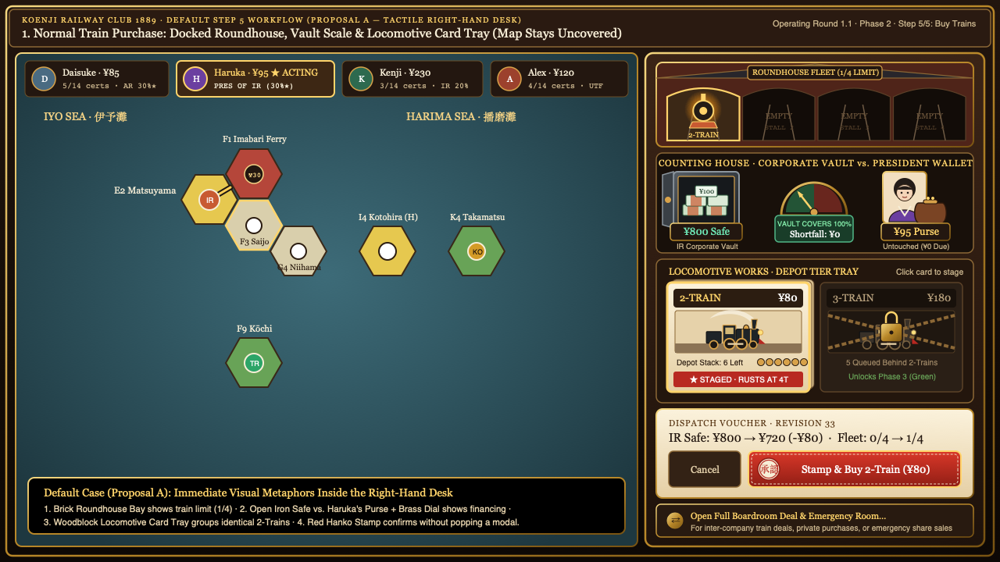
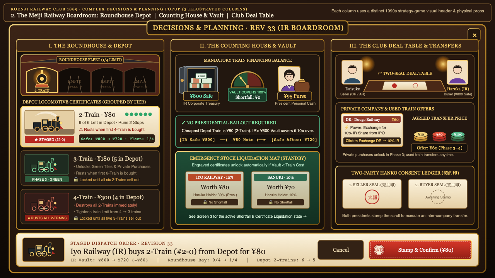
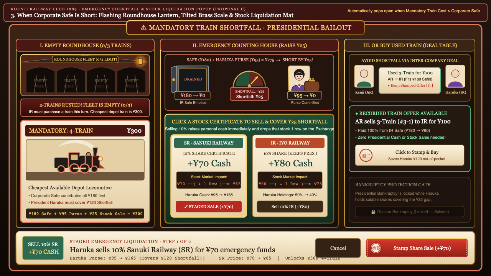
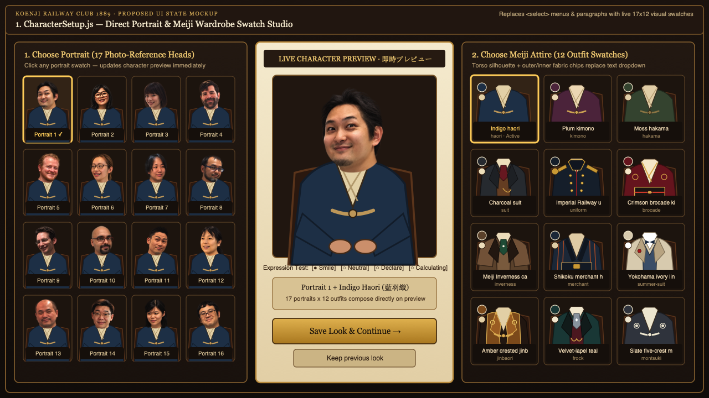
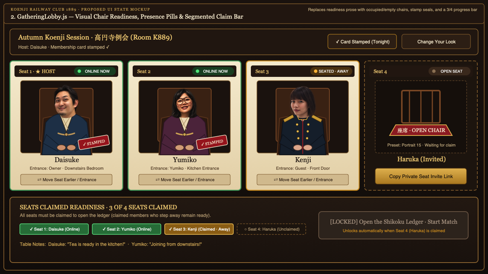
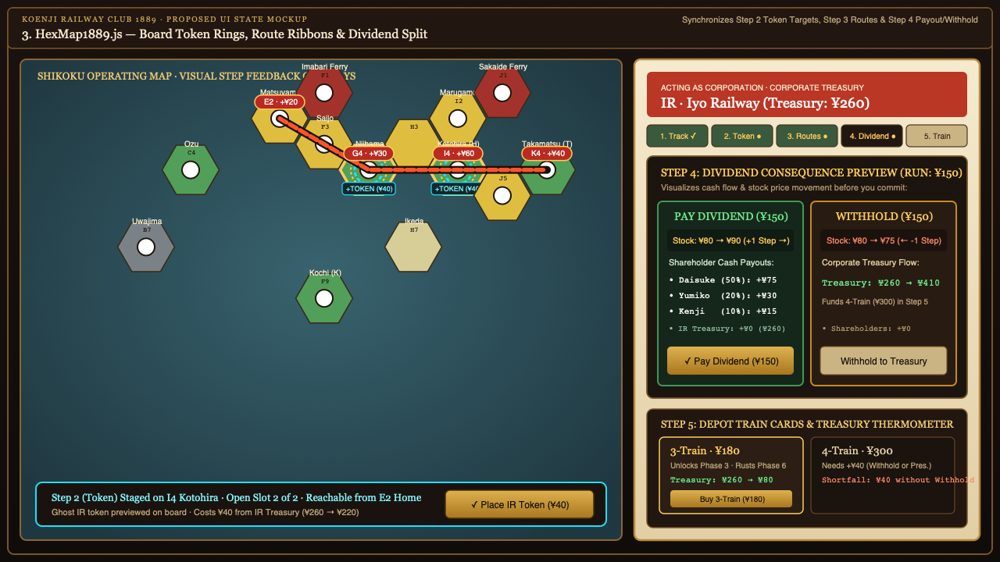
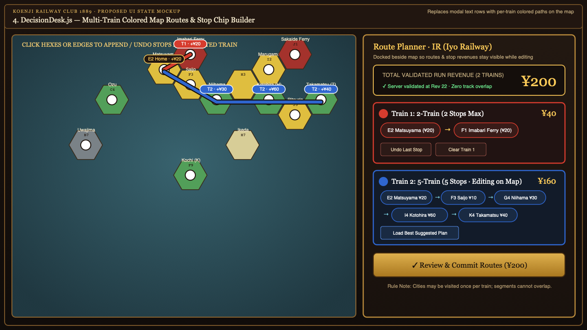
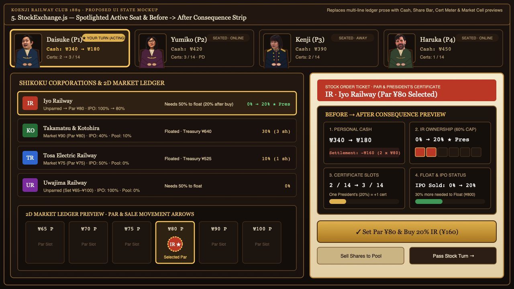

Koenji Railway Club 1889 — Proposed Visual State Screenshots
Rendered 1280×720 UI mockups resolving the "show, don't tell" items and the Decisions & Planning (Rev 33) train-buying & financing redesign across CharacterSetup.js, GatheringLobby.js, HexMap1889.js, DecisionDesk.js, StockExchange.js, and TimelineBar.js.
7. Proposal A (DecisionDesk.js + HexMap1889.js) — Inline Right-Dock Operating Ticket (Zero Modal Blocking)
Keeps the Shikoku map uncovered during Step 5 train purchases, collapses 2-0..2-5 into a single 2-Train Depot Card (6 of 6 left), fixes the 4-chip financing grid, and stages confirmation inline.

8. Proposal B (DecisionDesk.js) — Structured 3-Tab Decisions & Planning Ledger Modal
Replaces unspaced financing text, 6 duplicate train buttons, and stacked accordions with a 3-tab ledger, 4-card financing summary strip, Locomotive Certificate cards, and a bottom Consequence Dock.

9. Proposal C (DecisionDesk.js) — Visual Shortfall Thermometer, Emergency Share Sales & Corporate Transfers
Visualizes corporate + presidential cash shortfalls, emergency share sales with market row drops, and 2-step inter-company transfer consent cards.

1. CharacterSetup.js — Direct Portrait & Meiji Wardrobe Swatch Studio
Replaces native dropdowns and compatibility prose with clickable 17-portrait and 12-outfit visual swatches that update the central character preview immediately.

2. GatheringLobby.js — Visual Chair Readiness, Presence Pills & Segmented Claim Bar
Shows readiness through occupied vs. empty zabuton chairs, online/away status pills, stamp seals, and a 3/4 segmented progress bar.

3. HexMap1889.js — Board-Synchronized Token Targets, Route Ribbons & Visual Dividend Split
Extends visual board feedback to Step 2 token target rings, Step 3 route ribbons with stop revenue badges, and Step 4 Payout vs. Withhold consequence cards.

4. DecisionDesk.js — Multi-Train Colored Map Routes & Stop Chip Builder
Docks the route planner alongside the map, drawing per-train colored paths and stop revenue pills directly on the board.

5. StockExchange.js — Spotlighted Active Seat & Before → After Consequence Strip
Marks the active player's seat and previews Cash, Share Holdings, Certificate Slots, and Market Cell movement right above the action buttons.

6. TimelineBar.js — Self-Demonstrating Historical Snapshot Frame, Locked Ticket & Scrubber Pin
Frames historical inspection with a sepia border, padlocked ticket controls, a pinned scrubber marker, and a live-continuation return pill.